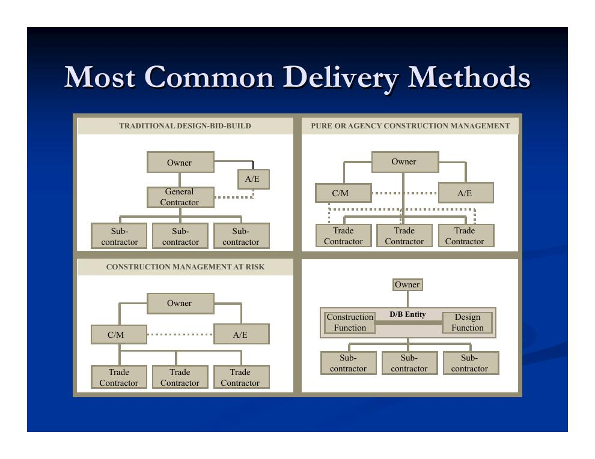
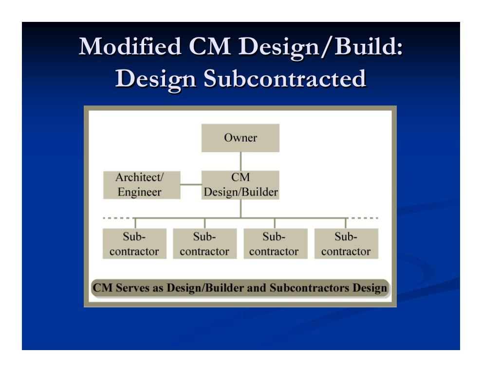
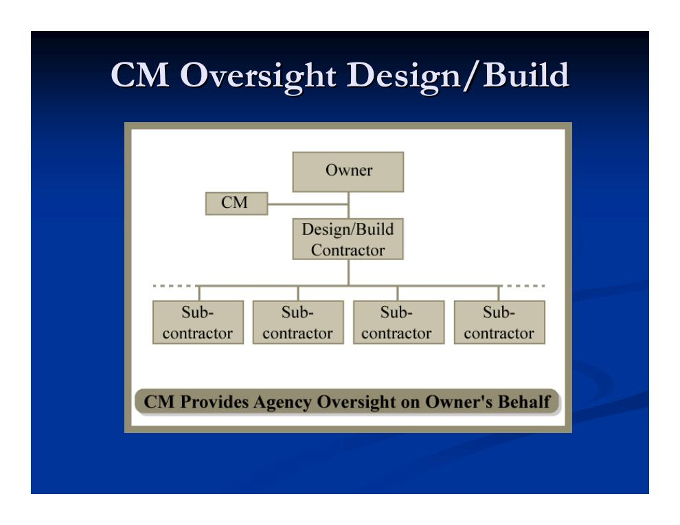

1. Der Bauvertrag: drei Stellschrauben
Wie ein Bauprojekt organisiert wird, entscheidet sich im Wesentlichen im Vertrag zwischen dem Bauherrn und seinen Auftragnehmern. Drei Hauptkomponenten legen die Organisation fest:
- Abwicklungsmodell (Project Delivery Method)
- Regelt die organisatorischen Beziehungen der Beteiligten: Wer plant, wer baut, wer steuert? Beispiele: das traditionelle Modell mit Generalunternehmer, Design-Build (Planung und Ausführung aus einer Hand) oder Turnkey (schlüsselfertige Übergabe).
- Vergütungsmodell (Payment Scheme)
- Regelt, wie der Auftragnehmer bezahlt wird: Pauschalpreis (Lump Sum), Selbstkostenerstattung mit prozentualem oder festem Zuschlag (Cost plus %/Fixed Fee) oder garantierter Maximalpreis (Guaranteed Maximum Price, GMP). Ausführlich in Kapitel 2.2.
- Vergabeverfahren (Award Mechanism)
- Regelt, wie der Auftragnehmer ausgewählt wird: durch Ausschreibung und Gebote (Bidding) oder durch Verhandlung (Negotiation).
2. Überblick und geschichtlicher Hintergrund
Den breiten Raum möglicher Abwicklungsmodelle kann man entlang zweier Achsen aufspannen: dem Grad der organisatorischen Integration (integrierte Organisation – alles aus einer Hand – bis hin zur segmentierten Organisation mit getrennten Planungs- und Ausführungsverträgen) und der Art der Finanzierung (direkt durch den Bauherrn oder indirekt, etwa durch den Auftragnehmer vorfinanziert).
Die heute üblichen Modelle sind das Ergebnis einer langen Entwicklung in der westlichen Welt:
- Antike und Mittelalter: Planung und Bau lagen in einer Hand – faktisch Design-Build.
- 15. Jahrhundert: Stärkere Trennung zwischen Architekt und ausführenden Gewerken; der Entwurf gewinnt an Bedeutung.
- 18. Jahrhundert („Jahrhundert des Ingenieurwesens“): Der Generalunternehmer führt die Gewerke, kaum Nachunternehmer.
- Vor den 1930er-Jahren: Mischung der Methoden; überwiegend Design-Build, teils mit alternativer Finanzierung (94 %).
- Nach dem Zweiten Weltkrieg: Spezialisierung nimmt zu, das Nachunternehmerwesen entsteht.
- 1960er/70er-Jahre: Komplexere Bauwerke, Bedarf an baubetrieblichem Sachverstand schon in der Planung („Constructability“) – das Construction Management entsteht.

3. Das traditionelle Modell: Design-Bid-Build
Design-Bid-Build (DBB) – wörtlich „Planen – Ausschreiben – Bauen“ – ist das klassische Abwicklungsmodell. Der Ablauf:
- Der Bauherr beauftragt zunächst einen Planer (Architekt/Ingenieur, kurz A/E), der den Entwurf und die Vertragsunterlagen erstellt.
- Erst nach Abschluss der Planung folgt eine Ausschreibung mit Wettbewerbsgeboten oder eine Verhandlung mit Bauunternehmen.
- Der beauftragte Unternehmer (Generalunternehmer) verantwortet allein die Ausführung des gesamten Projekts und kann Teile an Nachunternehmer vergeben.
Der Bauprozess ist damit strikt sequenziell. Zwischen Bauherr und Planer besteht eine kooperative, treuhänderische Beziehung (der Planer wird nach Qualifikation ausgewählt). Die Interessen der Beteiligten unterscheiden sich jedoch deutlich: Der Bauherr will Qualität, Termintreue und Arbeitssicherheit; der Unternehmer strebt nach Gewinn, kurzer Bauzeit, guten Geschäftsbeziehungen und Reputation; der Planer nach Gewinn, Ästhetik, Qualität und Anerkennung. Da meist Pauschalpreisgebote verwendet werden, entsteht häufig ein konfrontatives Verhältnis zwischen Bauherr und Unternehmer.
Der Generalunternehmer
- Wickelt nach wie vor einen großen Teil der Projekte ab, insbesondere öffentliche Aufträge mit Ausschreibungspflicht.
- Bei großen Projekten führt er selbst oft nur einen kleinen Teil der Arbeiten aus (teilweise unter 10 %) – die Rolle nähert sich dann der eines Construction Managers.
- Die Verantwortung für Probleme ist auf verschiedene Teams verteilt; der Bauherr muss Streitigkeiten zwischen Unternehmer und Planer schlichten.
- Temporäre Bauzustände und Hilfskonstruktionen (z. B. Gerüste, Verbau) plant der Unternehmer selbst; ein Ingenieur muss sie freigeben – oft nicht der entwerfende Architekt.
Nachunternehmer
Der Generalunternehmer steuert die meisten Nachunternehmer (Ausnahme: mieterseitige Unternehmer). Wichtige Punkte:
- Auf jeder Ebene fallen zusätzliche Gemeinkosten an; der Generalunternehmer bearbeitet die Freigabeunterlagen (Submittals) und holt Gebote der Nachunternehmer ein. Dabei droht „Bid Shopping“ – das Weiterreichen von Geboten, ohne dass eine Beauftragung garantiert ist.
- Die Vergabe an Nachunternehmer erfolgt typischerweise über Gebote (Leistung als „Commodity“); es können sehr viele Nachunternehmer beteiligt sein (beim Autobahnprojekt I-15 rund 200).
- Werkstatt- und Montagepläne (Shop Drawings) erstellen in der Regel die Nachunternehmer bzw. deren Fachingenieure; der Architekt zeichnet sie gegen, um die Übereinstimmung mit dem Entwurf zu bestätigen. Problem: Zwischen den Zuständigkeiten können Dinge „durchrutschen“.
- Gründe für Nachunternehmervergabe: fehlende eigene Kapazitäten oder Kompetenzen, Überlastung, mangelnde Ortskenntnis, Gewährleistungsbedarf, gesetzliche Vorgaben sowie Effizienz- und Kostenvorteile durch Spezialisierung.
- Der Generalunternehmer stellt den Nachunternehmern teilweise Geräte; Spannungen entstehen etwa über das Arbeitstempo oder zu viele Gewerke gleichzeitig auf der Baustelle. Ein gutes Nachunternehmermanagement ist entscheidend für die Produktivität. Bauherren verlangen häufig Bürgschaften der Nachunternehmer; teilweise werden Rahmenversicherungen abgeschlossen.
Die Rolle des Architekten/Fachplaners (A/E)
- Der Planervertrag wird typischerweise verhandelt – Planung ist eine Dienstleistung, keine Handelsware. Finanzielle Stabilität und weitere qualitative Faktoren sind entscheidend; gelegentlich gibt es Planungswettbewerbe.
- Den Preis sollte man nicht zu stark drücken: Es drohen schlechte Entwürfe, schwaches Personal und fehlende Zeit für Kontrollen. Merke: Der Preis der Planung hat geringen Einfluss auf die Gesamtkosten – die Qualität der Planung dagegen einen großen.
- Der Planer betreibt teils eigenes Value Engineering (Wertanalyse; riskant) und muss bei groben Schätzfehlern den Entwurf unter Umständen auf eigene Kosten überarbeiten. Er trägt eine Berufshaftpflicht für Planungsfehler (Errors & Omissions).
- Am Bau selbst wirkt er nur begrenzt mit: Er „beobachtet“ die Ausführung (um keine förmliche Überwachungsgarantie zu übernehmen), prüft Werkstattpläne nur mit Haftungsausschlüssen, meidet enge Kommunikation mit dem Generalunternehmer und schreibt keine Bauverfahren vor – allenfalls Empfehlungen in den Vertragsunterlagen.
Vorteile des traditionellen Modells
- Bewährtes, allseits bekanntes Verfahren (Gerichte, Unternehmen kennen es).
- Flexibilität während der Planungsphase (im Gegensatz zu Design-Build).
- Kosten stehen früh fest (mit der Submission); guter vertraglicher Schutz des Bauherrn.
- Offene Ausschreibung problemlos möglich; der Bauherr ist in die Bauausführung wenig eingebunden.
- Treuhänderische Beziehung zwischen Planer und Bauherr.
- Gut geeignet, wenn die Unsicherheit vor allem in der Planung liegt.
Nachteile des traditionellen Modells
- Der Entwurf wird vor Baubeginn nicht aus Ausführungssicht geprüft – Chancen auf erhebliche Zeit- und Kosteneinsparungen bleiben ungenutzt, und Baubarkeitsprobleme führen später zu Änderungen.
- Der streng sequenzielle Ablauf verhindert die Überlappung von Planung und Ausführung (kein Fast-Tracking) – der Bau kann erst nach vollständiger Planung beginnen.
- Wenige Interaktionen zwischen den Beteiligten; oft zu wenig Zeit, mehrere Alternativen zu prüfen.
- Innovative Finanzierungen sind schwierig; das Modell begünstigt sehr konservative Entwürfe und eignet sich schlecht für hochkomplexe Projekte.
- Änderungen sind schwierig: Nach Baubeginn ist der Entwurf faktisch eingefroren, und der Bauherr kann in die Abhängigkeit des Unternehmers geraten (Stichwort „On-Call Contractor“). Besonders hoch ist der Druck bei ausgeschriebenen Pauschalpreisverträgen – manche Unternehmer suchen Änderungen gezielt, um Geld zu verdienen.
4. Construction Management („Pure/Agency CM“)
Beim Construction Management (CM) beauftragt der Bauherr schon vor Baubeginn neben dem Planungsbüro eine Baumanagementfirma. Der Construction Manager wird typischerweise nach Qualität ausgewählt, nicht über den Preis. Je nachdem, wann das Managementteam einsteigt und welche Kompetenzen es mitbringt, sind viele Varianten möglich.
Das Modell entstand Ende der 1960er-Jahre bei Großprojekten wie dem World Trade Center und dem Madison Square Garden. Der CM kann den Planer empfehlen und prüft dessen Abrechnungen. Spezialisierte CM-Firmen sind meist sehr professionell – Vorsicht jedoch: Viele Generalunternehmer nennen sich lediglich CM. Man unterscheidet u. a. „Design-CM“, „Construction-CM“ und „Owner-CM“.
Aufgaben des Construction Managers
- Vor Baubeginn: Baubarkeitsprüfung, Value Engineering, Kostenschätzung, Variantenuntersuchung, Terminplanung, Finanzierung, Steuerung des Planers, frühzeitige Beschaffung langlaufender Lieferungen.
- Bauüberwachung: Qualitätssicherung, Zielverfolgung, Rechnungsprüfung, Koordination der Gewerke, Maschinen- und Elektrotechnik, Nachtragsmanagement, Zahlungen, Claims, Abnahmen gegen die Planungsanforderungen, teilweise Arbeitssicherheit.
Allgemeine Vor- und Nachteile des CM
- Vorteile: Die frühe Einbindung in die Planung verschafft frühe Preiskenntnis, beseitigt Planungsrisiken vor der Ausschreibung, bringt Baubarkeits- und Wertanalyse-Denken von Anfang an ein und lässt Baustellenrandbedingungen in die Planung einfließen. Der Terminplan wird flexibel (Fast-Tracking möglich), der CM kann nach Qualität ausgewählt werden und kennt die Pläne genau, bevor Preise eingeholt werden.
- Nachteile: Die Gesamtkosten stehen bei Baubeginn noch nicht fest; es drohen Konflikte mit dem Planer, den Nachunternehmern und – falls vorhanden – dem Generalunternehmer.
Reines („Agency“) Construction Management
Beim reinen CM (PCM) bleibt der Construction Manager Berater und Treuhänder des Bauherrn – die Gewerkeverträge schließt der Bauherr direkt ab. Kennzeichen: große Flexibilität bei Terminen und Änderungen, Marktwettbewerb um die einzelnen Gewerkeaufträge, geringes finanzielles Risiko des CM bei hohem Reputationsrisiko, Vergütung in der Regel über ein festes Honorar (professionelle Dienstleistung). Der PCM übernimmt Aufgaben von Planer, Generalunternehmer und Bauherr und wirkt als Moderator und Vermittler in Konflikten.
- Vorteile: Hohe Änderungsflexibilität; der CM ist objektiver und unparteiischer, weniger Konflikte zwischen Bauherr und CM; geringe finanzielle Risiken des CM; Kombination aus Preiswettbewerb bei den Gewerken (oft 5–8 % Ersparnis durch Direktvergabe) und treuhänderischer Beziehung zum CM; ein gemeinsamer Ansprechpartner; der Bauherr kann sich von einzelnen Gewerke-Unternehmern trennen; Entlastung des Bauherrn.
- Nachteile: Geringerer Anreiz für den CM, Preis und Bauzeit zu drücken; das Kostenrisiko liegt allein beim Bauherrn – keine Garantie des CM! Alle Beteiligten müssen kooperativ und kommunikativ sein und von Beginn an mitziehen; hohes Reputationsrisiko für den CM.
- „Entlastung des Bauherrn“ konkret: Projektsteuerung, Baubesprechungen, Managementsitzungen, Berichtswesen, Verwaltungsaufgaben, Budgets, Planfreigaben, Aufsicht und Qualitätssicherung übernimmt der CM.
5. Construction Management at Risk
Beim CM at Risk (CMR) übernimmt der Construction Manager zusätzlich ein Preisrisiko: Er garantiert dem Bauherrn üblicherweise einen Maximalpreis (Guaranteed Maximum Price, GMP), damit das Projekt sicher im Budget bleibt.
- Der GMP wird oft bei etwa 95 % Planungsfortschritt festgelegt; das Honorar liegt typischerweise bei 10–15 %.
- Das ist der zentrale Unterschied zum reinen CM: Das Bauherrenrisiko sinkt deutlich. Risikoseitig liegt CMR etwa in der Mitte zwischen DBB und reinem CM – und ähnelt stark einem früh eingebundenen Generalunternehmer.
- Die Gewerkeverträge schließt hier der CM selbst ab; Erfüllungsbürgschaften (Performance Bonds) sind üblich.
- Vorteile: Reduziertes Bauherrenrisiko; Preisgarantie über den GMP; direkte Vertragsbeziehungen zwischen CM und Gewerke-Unternehmern.
- Nachteile: Der GMP ist ein definierter Preis für ein noch undefiniertes Produkt. Während der Planung entsteht Preisdruck auf den Entwurf. Es gibt ein Timing-Dilemma: Wird der CM früh beauftragt, trägt er mehr Preisrisiko; kommt er spät, stiftet er in der Planung weniger Nutzen. Der CM ist nicht mehr unparteiisch (er kann aus Eigeninteresse gegen Änderungen argumentieren); es droht ein konfrontatives Verhältnis, und der Vertrag kann schwer durchsetzbar sein.
6. Design-Build und seine Varianten
Beim Design-Build (DB) – Planung und Ausführung aus einer Hand – entwickelt der Bauherr zunächst selbst eine Vorplanung mit etwa 20–30 % Planungstiefe und beauftragt dann eine Design-Build-Firma, die Planung und Bau fertigstellt. Das kann ein integriertes Unternehmen sein oder ein projektspezifisches Joint Venture. Die DB-Firma kann ihrerseits Nachunternehmer einsetzen. Die Vergabe läuft über eine Angebotsaufforderung (RFP – Request for Proposals), oft mit Aufwandsentschädigung (Honorarium) und in Phasen. DB kann für komplexe Projekte gut geeignet sein – dann aber mit phasenweiser Planung, um beide Parteien vor Risiken zu schützen.
Kennzeichen: Ein einziges Vertragsteam verantwortet Planung und Ausführung. Das Modell passt zu Bauherren, denen der Termin wichtiger ist als Kontrolle – um den Preis geringerer Einflussmöglichkeiten und größerer Kostenunsicherheit. Der Bauherr verliert Kontrolle über den Entwurf und Flexibilität bei Änderungen; er braucht genug Planungs- und Baukompetenz, um die Anforderungen anfangs festzulegen, Angebote zu bewerten und den Prozess zu überwachen.
„Zurück in die Zukunft“: DB war die dominierende Methode in der frühen US-Geschichte. Aktuelle Treiber der Renaissance: Verschlankung von US-Unternehmen (Auslagerung der Planung), Wunsch nach einer einzigen Verantwortungsquelle, Termindruck sowie Schwächen der eng definierten Architektenrolle (Baubarkeitsprobleme, begrenzte Überwachung der Ausführung).
Der „Bridge Designer“
Ein unabhängiger Planer, der als Brücke zwischen Bauherr und Design-Build-Team dient: Er erstellt die Vorplanung (bis etwa 30 %), bevor das DB-Team beauftragt wird, überwacht anschließend Planung und Bau und steht treuhänderisch auf der Seite des Bauherrn.
Vorteile von Design-Build
- Ermöglicht Fast-Tracking (überlappende Planung und Ausführung).
- Kann für manche komplexe Projekte gut sein: enge Koordination im Team, Aufbau von institutionellem Wissen.
- Eine einzige Verantwortungsquelle; gute Interaktion der Beteiligten.
- Konflikte zwischen Planer und Ausführendem bleiben dem Bauherrn verborgen.
- Änderungen aufgrund von Baustellenbedingungen lassen sich leichter einarbeiten.
Nachteile von Design-Build
- Keine treuhänderische Beziehung zum Planer – Gefahr, dass Entwurfsqualität dem Gewinn geopfert wird.
- Eine Bepreisung ist zu Beginn nicht möglich; für manche komplizierte Projekte ungeeignet. Der Bauherr muss wichtige Entwurfsaspekte früh selbst festlegen und eng involviert bleiben.
- Bauabschnitte können sich verzögern, weil die Planung nachlaufen muss; das Modell verlangt einen erfahrenen Bauherrn (Bauablauf, Qualität, Prüfung der Freigabeunterlagen, Verhandlung …).
- Weniger gegenseitige Kontrollen („Checks and Balances“): Vertragsänderungen und Probleme können verborgen bleiben, das Projekt kann eine Richtung nehmen, die der Bauherr eigentlich nicht will, und die DB-Firma kann für Änderungen hohe Preise aufrufen.
- Bei Fast-Tracking können Änderungen Nacharbeit und Iterationen auslösen; die Qualitätssicherung liegt beim Bauherrn.
- Paketcharakter: Einzelne Teammitglieder (z. B. bestimmte Nachunternehmer) lassen sich nicht austauschen.
Hürden im öffentlichen Bereich
Regulatorische Hindernisse: Auf US-Bundesebene ist DB seit dem Federal Acquisition Reform Act von 1996 zulässig, viele Bundesstaaten erlauben es aber weiterhin nicht. Erheblicher Widerstand kommt von der Architektenlobby und den Gewerkschaften.
Preisbildung und Auswahl
- Die Auswahl ist meist umfassender als ein reiner Preisvergleich: bewertet werden Entwurf, Preis, Termin und Team; oft gibt es Planungswettbewerbe.
- Timing-Dilemma: Frühe Beauftragung bedeutet mehr Risiko (und Risikoprämie) für die DB-Firma; späte Beauftragung weniger Wissen vorab, frühe Unsicherheit und eingeschränkte Kreativität (das Modell nähert sich dem Generalunternehmer).
- Häufig wird segmentiert bepreist: Selbstkostenerstattung für die Planung, Festpreis oder GMP für den Bau.
Mischformen mit Construction Management


7. Weitere Abwicklungsmodelle
- Multiple Primes (Einzelvergabe an mehrere Hauptunternehmer)
- Der Bauherr vergibt direkt an mehrere Hauptunternehmer. Verschafft ihm u. a. Zeit, während des Projekts Geld zu beschaffen.
- Turnkey (schlüsselfertige Errichtung)
- Wie Design-Build, aber der Unternehmer finanziert den Bau vor; sehr verbreitet im Wohnungsbau.
- Design-Build-Operate-Transfer (BOT)
- Der Auftragnehmer plant, baut, betreibt und übergibt das Bauwerk später – mit langfristiger Finanzierung (im Unterschied zu DBO). Wettbewerb ist über Größe, Übergabezeitpunkt u. a. möglich; es braucht besondere Garantien, um Anbieter zu gewinnen.
- Owner/Agent
- Der Bauherr übernimmt einen Teil der Planung selbst.
8. Die Modelle im Vergleich
Die folgende Matrix fasst zusammen, welche Beziehungen zwischen den Beteiligten in den vier Grundmodellen bestehen (K = Vertragsbeziehung, C = Kommunikationsbeziehung, I = interne Beziehung innerhalb einer Organisation):
| Modell | Bauherr–Planer | Bauherr–Unternehmer | Planer–Unternehmer | Bauherr–CM | CM–Planer | CM–Unternehmer |
|---|---|---|---|---|---|---|
| DBB (traditionell) | K | K | C | – | – | – |
| PCM (reines CM) | K | K | – | K | C | C |
| CMR (CM at Risk) | K | – | – | K | C | K |
| D/B (Design-Build) | K* (Vertrag Bauherr–DB-Team) | I | – | – | – | |
Vor- und Nachteile der drei häufigsten Ansätze nach Gould und Joyce (2002; „~“ = trifft abgeschwächt zu):
| Vorteil | Traditionell | Design-Build | Construction Management |
|---|---|---|---|
| Rechtliche und vertragliche Präzedenzfälle vorhanden | ✕ | ||
| Kosten stehen vor der Vertragsbindung fest | ✕ | ||
| Fast-Tracking (überlappende Ausführung) möglich | ✕ | ✕ | |
| Minimale Einbindung des Bauherrn | ✕ | ✕ | |
| Kostenvorteil durch Wettbewerb | ✕ | ✕ | |
| Verhandlung mit Qualitätsanbieter bei besonderem Know-how | ✕ | ✕ | |
| Anpassung an neue Bedingungen ohne Vertragsänderung | ✕ | ✕ | |
| Eine Firma steuert Planung und Ausführung | ✕ |
| Nachteil | Traditionell | Design-Build | Construction Management |
|---|---|---|---|
| Entwurf profitiert nicht von Ausführungs-Know-how | ✕ | ||
| Längste Gesamtdauer von Planung und Bau | ✕ | ||
| Konfrontatives Verhältnis Bauherr/Planer vs. Unternehmer | ✕ | ~✕ | |
| Vertrag wird durch Änderungen belastet | ✕ | ~✕ | |
| Wenige gegenseitige Kontrollen (Checks and Balances) | ✕ | ||
| Kostensteuerung setzt erst spät im Projekt ein | ✕ | ||
| Vertragssumme durch laufende Nachverhandlungen kompliziert | ✕ | ~✕ | |
| Vertrag wird durch unvorhergesehene Bedingungen belastet | ✕ | ~✕ |
Zum Abschluss einige Hinweise zu Geboten, die in Kapitel 2.2 und Kapitel 3.1 vertieft werden: Billigstbieter können unzuverlässig sein – deshalb aggressiv präqualifizieren. Für Fast-Tracking wird teils schon bei ca. 30 % Planungsstand ausgeschrieben. Man sollte die Leistung nicht mit Gewalt aus einem unrealistisch niedrigen Gebot erzwingen. Innovative Vergabeverfahren werden häufiger. Der Druck zum niedrigsten Gebot kann zu Qualitätsabstrichen, schwachem Personal und schlechter Stimmung führen.